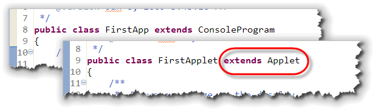
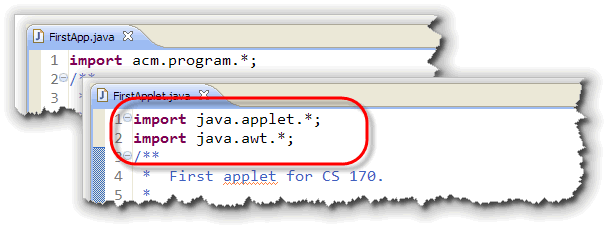
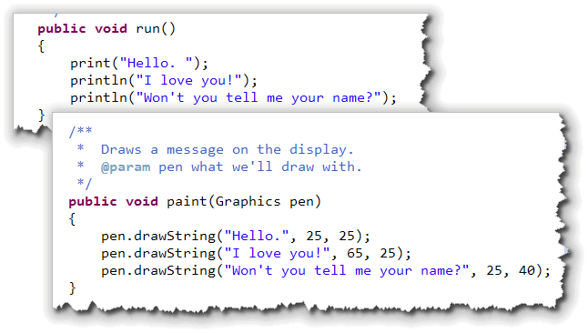
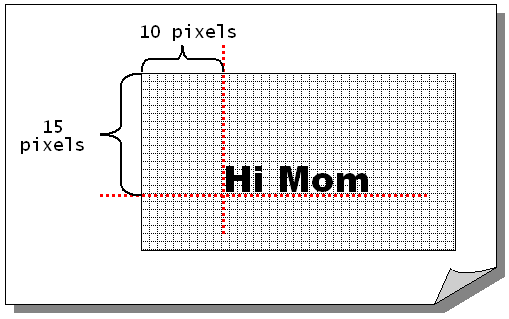
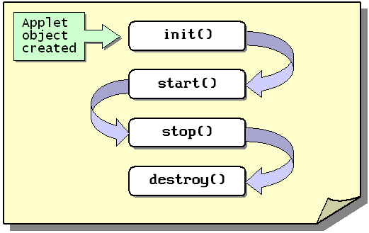
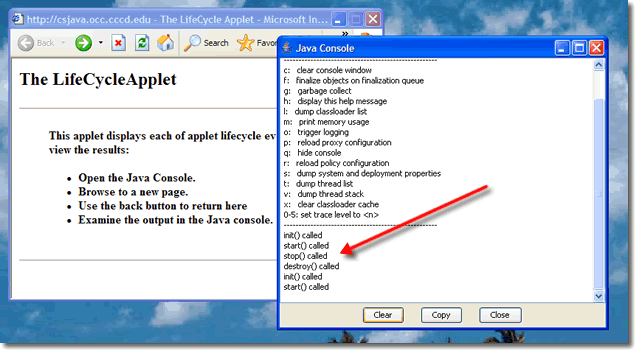

Java applets are programs that
run inside of your Web browser, like Ben Permadi's
Kaleidoscope Painter shown on the right. (You can run the
applet by clicking on the link in the previous sentence.)
Java applets are programs that
run inside of your Web browser, like Ben Permadi's
Kaleidoscope Painter shown on the right. (You can run the
applet by clicking on the link in the previous sentence.)
Java programs come in two basic flavors: applications that are written to be run as standalone programs on your local machine, and applets, which are written to be embedded inside a Web page.
In class this week, you wrote your first Java applet. In this lesson, you'll see what makes it work. You'll learn:
- about the difference between JavaScript and Java applets
- about the differences between Java applets and Java applications
- how to display text output in a Java applet
- about the different applet methods that you can override
Let's start by looking at the difference between JavaScript and Java applets.
JavaScript versus Java Applets
Web pages created using HTML are static pages.
You can make your Web pages interactive or dynamic
by embedding programs written in JavaScript (or VBScript on
Internet Explorer). When you use a scripting
language like JavaScript, the actual human-readable
source code for your program is embedded along with the
HTML in your Web page.
 When your browser downloads a page
containing JavaScript, your browser itself interprets the
JavaScript code and then executes it, much the same way
it interprets and then displays the HTML code.
When your browser downloads a page
containing JavaScript, your browser itself interprets the
JavaScript code and then executes it, much the same way
it interprets and then displays the HTML code.
Clicking this link, for instance, runs a JavaScript program, that displays a little popup dialog box. To see the code for this program, you can right-click on the page, and choose View Source in your browser. Scroll down to the third paragraph of the content section, and you'll find the actual source instructions that are interpreted by your Web browser when you click the link.
Java Applets
Java applets, on the other hand, work differently. An applet is a compiled Java program that is stored on a Web server. The code for the applet itself isn't contained inside your Web page. Instead, you add a special tag to your HTML, (called the applet tag), that tells the Web browser where to find the compiled code, and how to display it.
When your Web browser encounters a reference to a Java applet in a Web page, it sends another, separate request to the server, asking for the compiled applet code. This is the same way that images or other types of "embedded" content, such as Flash movies, work.
A Java applet is a special kind of Java program, because it can't run on its own: it needs a Web browser to give it a "home". When your Web browser receives the compiled Java program from the Web server, it launches a Java Virtual Machine (this is the interpreter that will run the Java program), provides a bit of screen real estate for the applet to use, and then lets the applet start running.
Note:
Java applets do not have a main() method,
like the applications from earlier in the semester. That means
that another Java program, (one having a main()
method), must be used to display them. This "display-my-applet"
program is built-in to your Web browser, or, you can run it
as an external program called appletviewer. If you attempt
to "run" your applet class by itself, you'll get an error message
that complains about the missing main() method.
To learn about the HTML you use to add Java applets to your Web page, you can read the optional HTML lesson that I've linked to the Unit 7 start page. You won't actually need to use any HTML to create your applets using Eclipse. Eclipse will create a temporary Web page for you, so you can run your applet on your local machine.
Applets and Applications
Now that you know what a Java applet is, let's take a look at how they are different from the applications you've written up to now. To do this, we'll compare:
- FirstApp.java, the program you wrote during the first night of class.
- FirstApplet.java, the applet you wrote in class this week.
;){kind=link}
;){kind=link}
You can click the hyperlinks in the previous section to open the source-code for programs in separate windows, if you'd like to examine both programs side-by-side.
The Class Header
The FirstApplet program looks familar, but it also looks a little strange as well. That's because while it's similar to the programs you've written up to now, it's not exactly the same.
Let's take a look at a few of the syntax issues
that arise because of the differences between
applets and applications.

The class header for the applet FirstApplet, on line 9, is almost identical to the header for FirstApp on line 8. As you can see, the only difference is that the class following extends is different. Let's review what that means.What is "extends Applet"?
 The word extends, you recall, is a keyword like public
and class. The extends keyword means that what
precedes it (in this case the public class FirstApplet),
adds something to, or builds upon, what follows it (in this
case, something called Applet).
The word extends, you recall, is a keyword like public
and class. The extends keyword means that what
precedes it (in this case the public class FirstApplet),
adds something to, or builds upon, what follows it (in this
case, something called Applet).
Remember that a header introduces a class and that this part of the header describes its lineage. Sort of like a medieval herald at a ball:
Announcing Fred, Duke of URL, heir of Oingarten
As you saw earlier, the ancestor of the FirstApp class was ConsoleProgram, a class defined in the ACM class libraries. So, what about Applet? Where does it come from?
Well, the Applet class is not part of the ACM libraries, but is one of the classes supplied as part of the base Java Platform.
 The Applet class actually has quite a pedigree, which
you can discover by looking at the
Java documentation (JavaDocs) for the Applet class.
The Applet class actually has quite a pedigree, which
you can discover by looking at the
Java documentation (JavaDocs) for the Applet class.
(Click the link in the preceeding sentence to open
the documentation in a new window.)
As you can see, the Applet class is descended from
the Panel class, which is a child of the Container
class, which is a subclass of Component, which comes from
Object, the root or base class for all
Java classes, (both the "built-in" classes, and the user-defined
classes that you'll create on your own.)
Import Statements
You'll notice that the fully-qualified name of the Applet
class is java.applet.Applet. That brings us to the second
difference between FirstApp and FirstApplet: they
use different import statements:

Remember that the import statement tells the Java compiler which packages to search to find a class used in your program. A package, you'll recall, describes to the Java compiler and the Java Virtual Machine the place where the specific class we want to use is stored.In the case of FirstApp, we imported the package acm.program, which was located in the acm.jar file that I included in your projects. In our applet's case, the Applet class is in the package, java.applet. Package names that begin with java are part of the core Java packages, included with the Java Platform.
In addition to the java.applet package, your applets will almost always import the classes in the java.awt package. This package includes the Graphics class which we'll use for drawing our output, and the Color and Font classes which you'll meet in the next lesson.
You can also import specific classes, by writing something like:
import java.applet.Applet;
import java.awt.Graphics;
When you do this, you cannot then use another class in the
Graphics package, (say Color for
instance), without explicitly importing that class as well.
Some programmers prefer to explicitly import individual
classes because they feel it makes their code clearer. It
does not, however, make your programs any smaller to do so.
The paint() Method
Finally, both FirstApp and FirstApplet contain
a single method, that displays exactly the same output:

In a console program, like FirstApp, therun()
method is automatically called by the Java runtime when you
run your program. Inside that method you put the statements
that display your output.
In an applet, there are actually several predefined
methods that are called whenever your applet
is run (either by your IDE or by your Web browser). These
lifecycle methods are automatically
invoked (or called) in a specific order. If you want to
do output in your applet, though, you'll put your code
inside the paint() method.
We'll look at the rest of these methods later
in this lesson. For right now, we'll just look
at one of them, the paint() method.
The Method Header
Remember that a method definition, like a class definition, consists of both a header, and a body, and that the method definition is placed inside the class definition.
The paint() method header consists of these four pieces:
public: This is the same access specifier you used in FirstApp.java'srun()method. This allows objects from different classes (like theAppletviewerclass or your Web browser) to ask aFirstAppletobject to display itself.void: Like therun()method,paint()performs an action, rather than calculating a value. These kinds of methods have avoidmethod return type.-
paint: Because theAppletclass already inherits apaint()method, and because we want to replace this fairly uselesspaint()method with our own, we must be careful to spell this exactly as shown. WritingPaint()orPAINT()will not create an error, but your method won't be called either. Your Web browser will only call thepaint()method, and it's very particular about the spelling. -
(Graphics pen): Thepaint()method takes one, single parameter, aGraphicsobject, that we've namedpen. We could have named this object anything we like, because "pen" is just an identifier. Usingpicassoinstead ofpenwould have worked just as well.Most often, this parameter is named "g", since it's very short and easy to type, kind of like using "i" for an array index. I prefer the name "pen" since it reminds me what the
Graphicsobject actually does.
Drawing Text
Instead of using println() (or
System.out.println()) to print a message on the
console window, you'll draw your text on the
surface of your applet by using the Graphics
drawString() method.
With println(), you only needed to supply
the text you wanted to display, since each line of output
appeared immediately following the previous output. With
the drawString() method, though, you need to
provide three parameters:
- the text you want to display
- the horizontal position to start drawing
- the veritical position to start drawing
In this example, the words "Won't you tell me your name?" are
displayed 25 pixels in from the left-hand edge of the applet
and 40 pixels down from its top:
 When drawing text, the horizontal (x), and vertical
(y) positions where the text appears are measured from
the upper-left corner of your applet, (not from the upper-left
corner of your screen or of your browser window).
When drawing text, the horizontal (x), and vertical
(y) positions where the text appears are measured from
the upper-left corner of your applet, (not from the upper-left
corner of your screen or of your browser window).
- The unit used for measurement is the pixel
- The x,y arguments represent the baseline of the text—an imaginary line where the text "sits".

Since the coordinates used by drawString()
represent the baseline of the text, if you use the coordinates 0,0,
all of your text will be positioned outside of your applet,
because it will be sitting "on top of" the top border. Java
(wisely) prohibits you from painting all over screen real estate
that you don't own, so you won't be able to see your text at all.
Well, that's it for the basic applet syntax. Now, let's take a
look at the first class you'll be using: the Graphics
class.
The Graphics Class
In the drawString() example,
listed above, the message is sent to an object named "pen". Who, or
what, exactly, is "pen"? At first glance, it would seem that
the Applet or String classes would be likely
candidates to handle such drawing chores. In fact, however,
neither of them is up to it.
The String class knows all about characters, but it doesn't know anything about the resolution of your video display, or how many pixels are requried to draw a "t". For that, you need the services of an expert; in Java, that expert is a member of the Graphics class.
From working with the drawString() method, you
can see that only Graphics objects can draw on the
display of an applet. You might wonder why this is. Why can't
you just tell your computer to paint a red pixel at location
100, 100, without involving some Graphics object?
Let's see!
Who Does What?
In the "old days", back when every computer ran a single program at a time, telling your computer to turn a particular pixel red was a reasonable request. Today, however, it doesn't make much sense at all. Here's why.
As I'm writing this, I have fourteen different applications running in the foreground. If all fourteen of my applications decided to paint at location 100, 100 at the same time, chaos would quickly follow. Obviously, with multiple applications running, each application cannot treat the display as its own private resource. Each one has to share with the others. They all have to agree to abide by the same "contract:

The AWT and the Graphics Class
The key figure in this picture is the AWT (the Abstract Window
Toolkit) and its Graphics object. The Graphics
object acts as a "traffic cop" to make sure your efforts to paint on the display
don't interfere with other programs, or with different parts of
your own program.
It does this in three ways:
- The
Graphicsobject "clips" your drawing region. If you create a drawing area that is 100 pixels square, and you try to paint a bright red circle that extends outside your drawing area, yourGraphicsobject, in effect, holds a "stencil", (called the clipping region) over your drawing area so your efforts don't spill over on your neighbor's area. - The AWT "monitors" your drawing region. If another
application should drag a dialog box over your drawing
area, or if your application should scroll a portion of
your image out of its window, the AWT will "notify" you
when your drawing region needs to be repainted. (It
notifies you by calling your applet's
paint()method. - The AWT "schedules" access to your drawing region, so that
different methods don't end up fighting over the area.
Although you have to write the instructions (inside your
paint()method), that do the actual painting, you can ask the AWT to perform the painting, by calling your applet'srepaint()method. This submits a "work order" with the AWT, letting it know that you'd like to have your applet repainted.
The AWT manages the overall painting process, but it doesn't write the instructions that do the actual painting. That responsibility is up to you.
Inside the Graphics Class
Every Java Component has its own Graphics object.
A copy of that Graphics object (not the original) is
passed to the paint() method when it is
called. When you receive your Graphics object, you're
going to use it for two things:
- The
Graphicsobject provides the environment in which you'll work: your own "painting studio" to speak. There are several methods that allow you to modify that environment. - The
Graphicsobject contains a set of methods that will help you in your actual painting. Think of these as your "painter's apprentice." You can use these methods to do your drawing.
We'll look at the different painting methods in a later lesson. Let's take a quick look at the "environment" part right now.
The Environment
 The
The Graphics object contains the "environment" used when
any Java graphical component is drawn. This environment consists of:
- a default
Font, used to display text when you call thedrawString()method. - a default pen color, used when drawing lines or shapes.
- a default background or pen color.
- a default drawing mode.
- a default coordinate system.
The Graphics object that you receive, itself "borrows"
several of these items from the graphical component it represents. A
Graphics object uses its component's foreground property
as its default drawing color, for instance, and the
Graphics coordinate system is relative to the upper-left
corner of its component.
Inside your paint() method you can make
changes to the temporary Graphics copy you receive by
calling the methods in the Graphics class.
For instance, to change the drawing color (assuming your
Graphics object is named pen), you could
write:
pen.setColor(Color.RED);
This doesn't change the "master copy" of the Graphics
object attached to your applet. The default drawing color is still
normally black. We'll see later how you can change the default
foreground and background colors for a graphical object.
Now, let's look at some of the other life-cycle methods you can redefine or override when you create an applet.
LifeCycle Methods
Earlier in this lesson you saw that
you could override the preexisting paint()
method to display output in your applet. When you run an
applet in your Web browser, or by using the appletviewer program,
the browser creates an instance of your applet—an
Applet object. It then sends a predefined and
predictable set of messages to that Applet object.
This set of predefined and predictable methods, which are invoked
by your Web browser or the appletviewer application when you
run an applet, is called the applet
lifecycle, as shown here:

Since you've already met thepaint() method, let's
look at the others now.
The init() Method
When an Applet object is first created, your browser
starts by calling the applet's init() method. This
method is only called once. The version of init()
that your applet inherits from the java.applet.Applet
class does absolutely nothing, so if your applet has any
initialization at all, you'll normally override this method.
The init() method is where you will normally create
the visual design of your applet, adding and positioning
different widgets before the program starts running and changing
the foreground and background color.
Here is the signature you must use:
public void init()
If you use a different signature, spelling the method
Init() for instance (capital I), it is not an
error; this simply creates a different method. (It's not an
overloaded method either because the methods init()
and Init() have two different names).
Even though the compiler doesn't complain, your program will
fail to run correctly, because the browser calls a method named
init() while your program has a method named
Init()
The start() Method
After calling init() your browser
calls the inherited method named start().
You can put more initialization in this method if you like.
Here is the signature you must use to override
start():
public void start()
The difference
between start() and init() is that
init() is only called when an applet is loaded, while
start() is called every time the Web page containing
the applet is displayed, whether newly loaded or
reloaded from your browser's cache.
That might not seem like a big distinction, but it may be. When you leave a Web page to visit another one, the page is normally stored locally in your disk and memory cache. When you revisit the page—using the back button, for instance—the local copy of your Web page is redisplayed.
If the applet has not been destroyed, then only the
start() method is called, not the init()
method. (See note below, however!).
Lifecycle Changes
The fact that start() can be called without calling
init() each time has been a constant source of
bugs in applet code, because programmers really had no control
over whether the browser would destroy the applet when a
user left the page. Internet Explorer, for instance, always
destroyed the applet, while Netscape did not. Thus programmers
could easily write applets that worked correctly on IE,
(since they assumed that the init()
method would be called each time the page was visited), but
that would fail when used on Netscape, which obeyed the
"official" lifecycle rules.
This resulted in applets that made it appear that
Netscape's browser was broken, when, in fact, the applet
was written incorrectly. Users didn't understand the problem,
though, and because of this confusion, almost all recent browsers have
followed IE's lead, and destroy the applet when the user
leaves the page. Pages written assuming the original lifecycle
behavior still work correctly, and pages written assuming the
MS lifecycle no longer appear buggy on other browsers.
The stop() Method
In the same way that start() is called
whenever you display an applet, the stop() method
is called when your browser leaves the page containing your
applet. The signature for the stop() method
is:
public void stop()
You'll normally override the stop()
method to put your program in a dormant state. If you are playing
music, for instance, you'll use the stop() method
to turn it off and the start() method to start it
back up. You'll see how to do this later in the semester when
you begin working with threads.
The destroy() Method
The last of the basic applet life cycle methods is
destroy() The signature for the
destroy() method is:
public void destroy()
Your browser calls your applet's
destroy() method when it needs to discard the
applet from memory. If you revisit the Web page containing the
applet after destroy() has been called, then a new
applet object will be created, and init() will be
called once again. (See note under the start()
method.)
If your applet allocates a system resource, typically
a thread, you should override the destroy() method
to kill the thread. The stop() method will always
be called before the destroy() method.
A Lifecycle Example
Here's an example program, LifeCycle.java example program that shows you some visual evidence of the applet life cycle at work.
Click on this link to run the applet in a separate window. Once the applet window opens, right-click the little Java icon in the system tray, and use the context-menu to open the Java Console.
For the Mac, you'll need to enable the Java console using the plugin control panel found in Applications->Utilities->Java. Unfortunately, once you turn it on, it runs every time a Java applet is loaded, which is kind of annoying.
Once you have the console open, use your browser buttons to visit another page (unloading the applet), and then return to the page containing the lifecycle appplet using the "Back" button.
The Java Console will display a message as each of the lifecycle
methods is executed. You should see something that looks similar
to this:

Where's the Output?
The LifeCycle applet overrides all four
of the applet lifecycle methods, and then uses the
System.out.println() method to print a message
in the Java console. If you run this program from the
command-line, using appletviewer you'll see that
System.out.println() writes to the console
window, rather than to the Java Console.
The first time you use System.out in an applet,
you might be surprised. When used in an applet, (or in a GUI
application, for that matter), System.out
does not display its output on the surface of your
applet. Instead the output is displayed on the console
that was used to start the applet in the first place.
If you are running your applet in appletviewer, this will be the DOS (or shell) window where you launched appletviewer. If you are running your applet using Eclipse, then it will be the "output pane" where Eclipse displays its error messages. If your applet is being viewed in your Web browser, the output will be displayed in your browser's Java Console window.
Coming Up Next ...
In this lesson, you learned how the syntax of an
applet differs from the application programs you've written
up to this point. You also met Java's Graphics class,
and learned how to use it's drawString()
method to draw text on the screen.
In the next lesson, we'll learn about the process of
creating objects, starting with Java's
Color and Font classes.